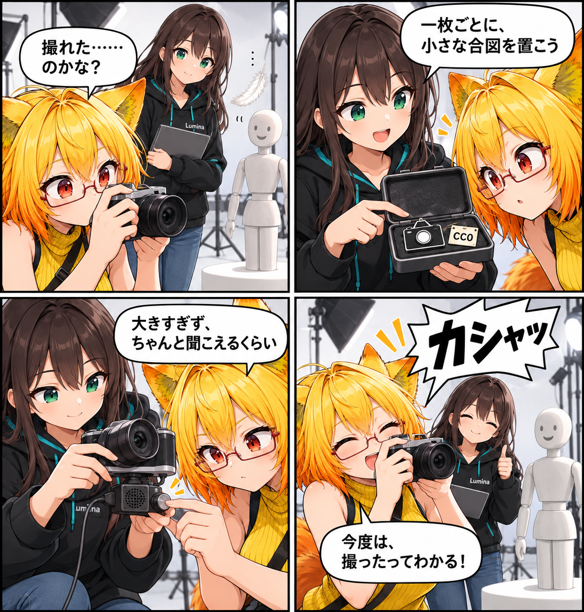

2026.09.29 / Development Log
一枚の瞬間に、合図を添えた日
写真を撮る瞬間に、小さく「撮れた」と伝わる音を添えました。撮影処理の直前に一度だけ鳴るシャッター音と、その扱いに必要な音量設定・ライセンス通知までを整えた変更です。
記事種別はdevelopment。集計期間は2026-09-28 03:00:00 JST〜2026-09-29 02:59:59 JST。参照ブランチはmain、終了時点のHEADはc994d34230ba52609203dc3430e3ae45248262f0（VRパーツ一覧の親行クリックを修正）。対象は10コミットです。未コミット差分は実績へ含めていません。

撮影の直前に、一度だけ鳴らす
写真撮影を開始するとき、実際のキャプチャ要求を送る直前にシャッター音を一回再生するようにしました。撮影中という状態表示だけでなく、押した瞬間の小さな合図を加える意図です。
撮影専用の音源を用意する
音源はResources/Audio/CameraShutterから初期化時に読み込みます。再生中は撮影コントローラーの子に専用のAudioSourceを用意し、空間化せず、ループさせずに一回だけ鳴らします。リスナーが一時停止中でもこの合図は再生できる設定です。
音量は、必要な分だけ
シャッター音の音量はインスペクターから0〜1の範囲で調整できます。既定値は0.8です。映像の邪魔をするほど大きくせず、撮影したことが分かる程度へ調整できるようにしています。
CC0音源の出どころも記録する
同梱した音源はCC0 1.0の素材です。利用にあたり、第三者ライセンス通知へ音源の出典、ライセンス、同梱ファイル、SHA-256を記録しました。音だけを追加して終わりにせず、由来をあとから確認できる形にしています。
4コマの裏話
無音の「撮れた……のかな？」を最初に置き、最後の「カシャッ」で返す伏線回収の寸劇です。音源ケースの小さなCC0札は、音の出どころを記録した今回の作業を示しています。アプリ画面や実行結果そのものではありません。
まとめ
写真撮影の直前に、CC0シャッター音を一回再生するようにしました。撮影専用の非空間・非ループ音源を準備し、音量を0〜1で調整できるようにするとともに、音源の由来とライセンス情報も通知へ記録しています。
本日のひとこと
一枚の合図があると、瞬間が手元に残る。